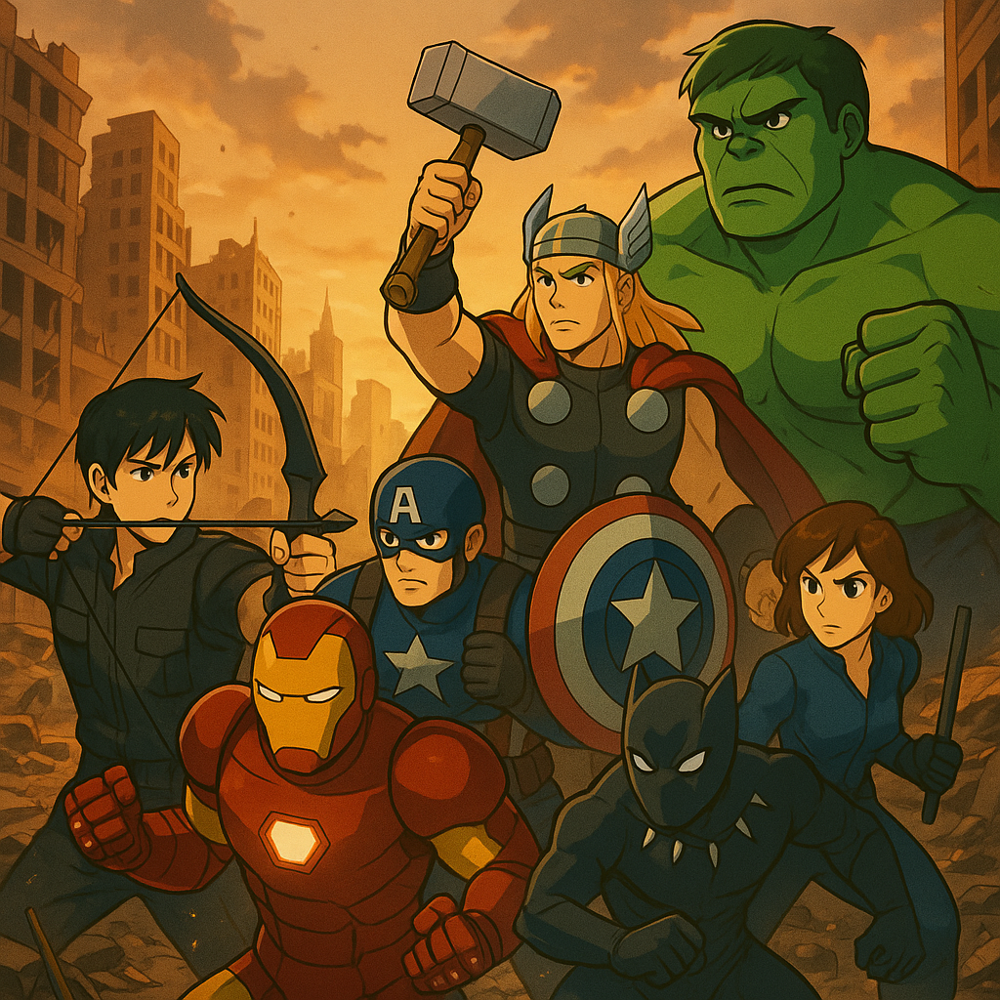

Vingadores: Ultimato — CSS Interno
Preparação e resolução
Após o Estalo, os heróis planejam o “golpe no tempo” para recuperar as Joias e reverter as perdas.
O plano envolve coordenação entre pares, viagens a momentos críticos e compromisso de devolver as Joias para preservar as linhas do tempo.
Propósito
Motivação que os guiam
- Tony Stark – culpa por Ultron e pela invasão de NY e proteger a Terra e os que ama (especialmente o Peter)
- Steve Rogers – vingar o planeta não pela raiva, mas corrigindo a injustiça do Estalo e enfrentando quem a causou
- Thor – luto por Asgard, Loki, Heimdall e culpa por finalizado Thanos
- Bruce Banner / Hulk – provar que seu poder pode salvar, não destruir
- Natasha Romanoff – expiar o passado; manter a “família” unida; trazer de volta quem sumiu (inclusive a família do Clint)
- Clint Barton – família apagada pelo Estalo, busca redenção e a chance de recuperar os seus
- T'Challa – proteger Wakanda e o mundo, honrar os que se foram no Estalo e liderar seu povo ao lado dos Vingadores na restauração do equilíbrio
